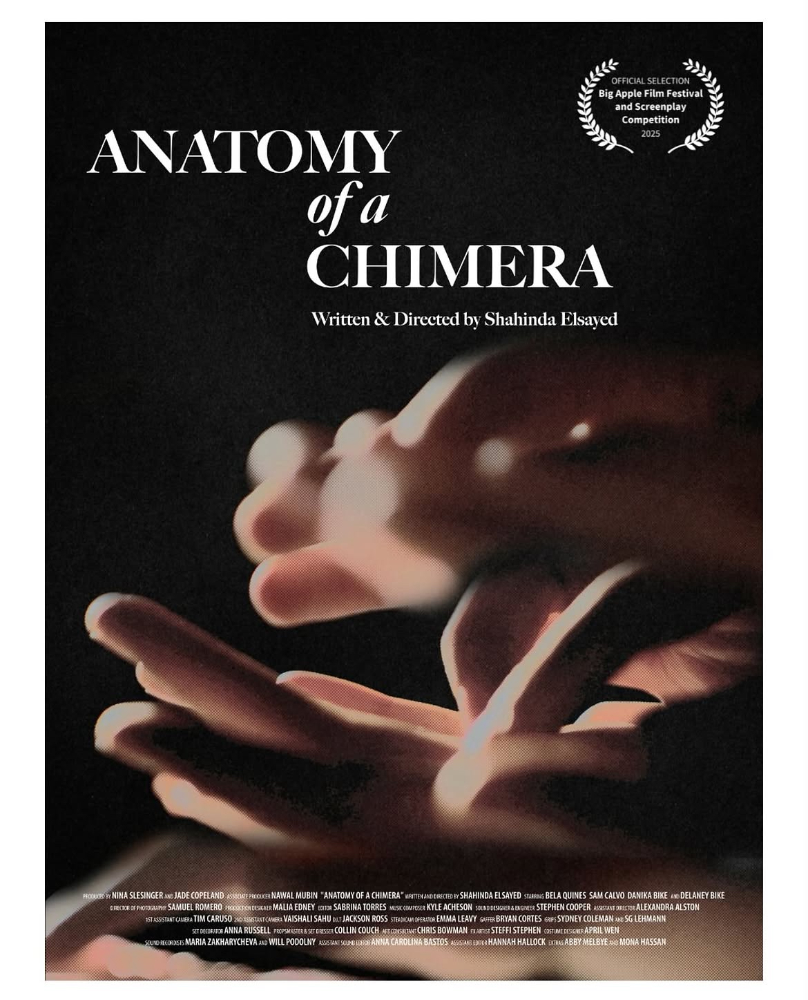
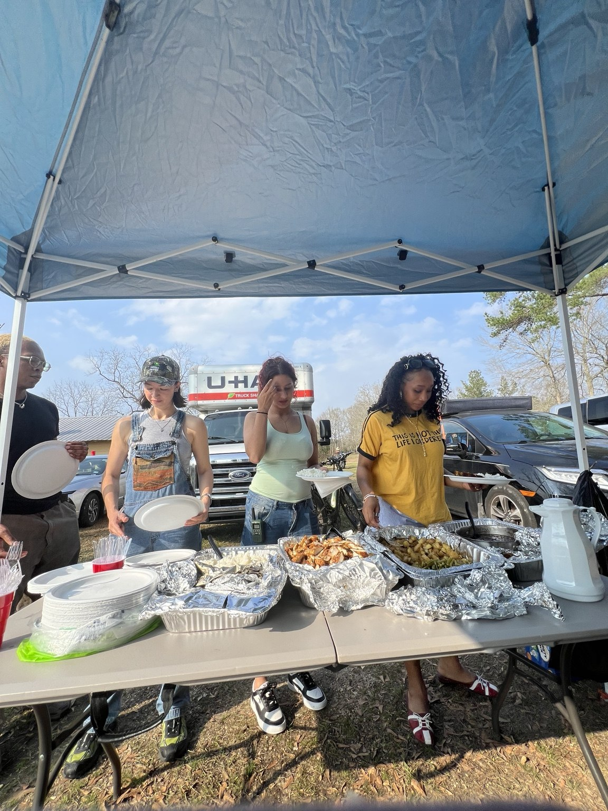
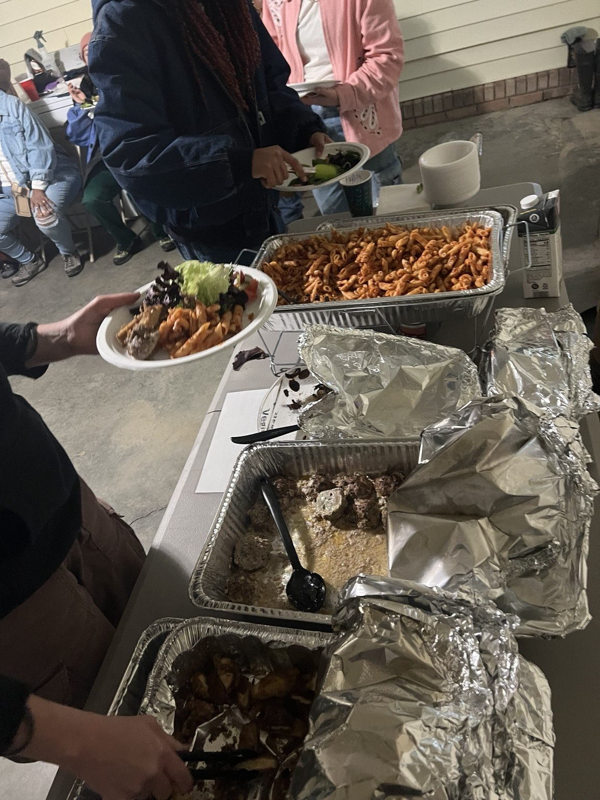
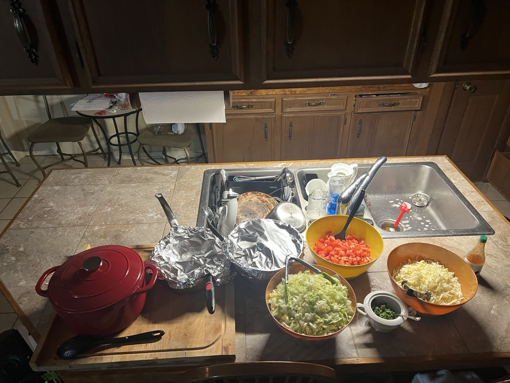
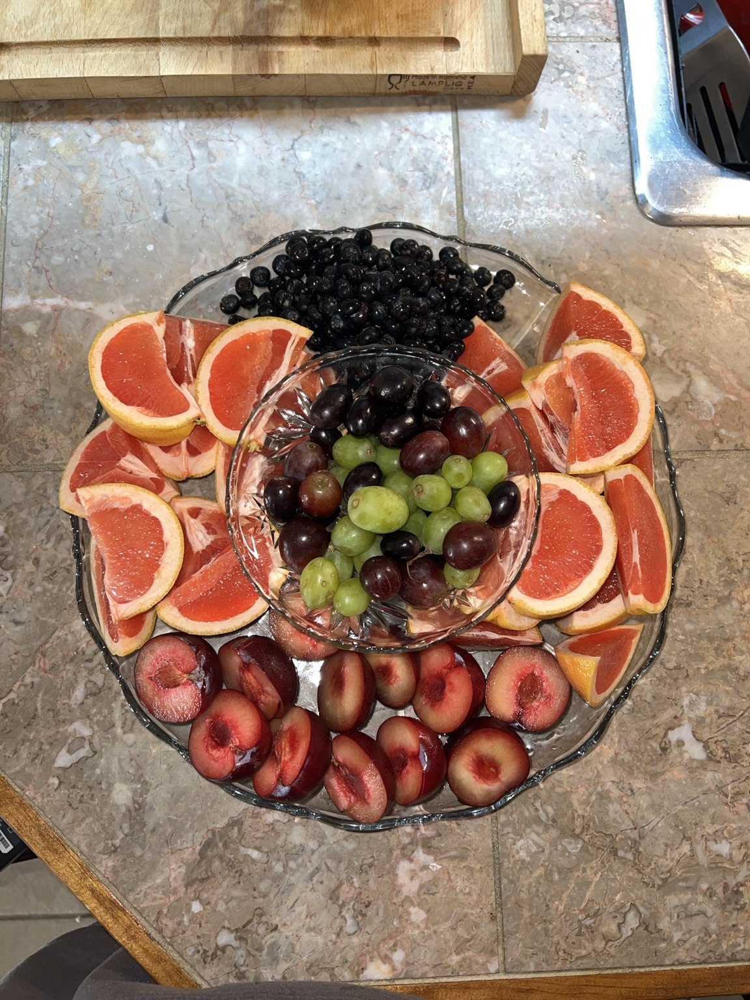

Home Sweet Home
DIRECTOR · CO-WRITER · EDITOR
01 / DIRECTING
02 / EDITING
EDITOR · SELECTED FILM

EDITOR · SELECTED FILM
EDITOR · SELECTED FILM
03 / PROFESSIONAL WORK

BROADCAST / SPOTS
Selected broadcast spots from my professional work in editing and copy.
DIGITAL CONTENT / PRODUCTION
Selected video projects from my work as a video editor and camera operator.
EVENT / STORYTELLING
Wedding film editing focused on the moments, pacing, and details that make each story personal. Primarily editor, with occasional second-camera work.
04 / IN POST-PRODUCTION
CHERRY PIE · DIRECTOR / CO-WRITER · IN POST-PRODUCTION
ADDITIONAL PRODUCTION SERVICES
Having worked on film sets, I know how much a good meal matters during a long shoot. I plan satisfying, nutritious crew meals that account for dietary restrictions and production budgets, with a few crowd-pleasing favorites mixed in. I enjoy making thoughtful menus that work for the people, schedule, and resources of each production.
Available for select on-set catering inquiries.




FILM SET CATERING · MENU PLANNING · DIETARY CONSIDERATIONS · BUDGET-CONSCIOUS OPTIONS
ABOUT ME

I'm interested in the many moving parts that go into making a project come to life. With a background in directing, my work includes narrative film, documentary, and commercial video editing, as well as digital content and creative production.
I enjoy the balance of creative thinking and practical problem solving that goes into making an idea real. I'm detail oriented, tend to think a few steps ahead, and like working with people from different backgrounds and disciplines.
VIEW RESUME ↗05 / WHERE I'VE WORKED
EDUCATION
MFA, Cinema Art · Directing · Feirstein Graduate School of Cinema, Brooklyn College